我們是基隆高中302音樂班， 透過這次實習音樂會展現學習成果與團隊合作精神。
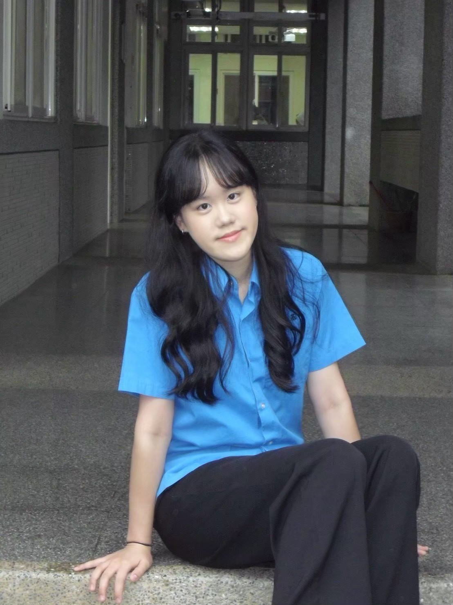
Major:Cello
Edouard Lalo: Cello Concerto in D minor, 3rd mvt. Andante-Allegro Vivace
#傻
拍照要拍別人結果拍到自己
#卷王
每次都說「欸⋯我沒有讀」然後段考都考7、80分
#消失的男朋友
拜託趕快來一個男人把一寧帶走吧，太吵了。雖然他整天在那邊叫說交不到男朋友，可是又說：「欸⋯可是我如果真的遇到我喜歡的人 我也不敢跟他在一起耶⋯」那你到底是想要怎樣呢？
#瀏海
基本上王同學的瀏海就是他靈魂的一部分，之前噴定型液來學校結果一來就被同學壓扁，自己獨自生氣⋯
#我拿琴欸你瘋了嗎
不知道從什麼時候就有了這個口頭禪
#口齒及其不清晰
每次都聽不懂一寧在講什麼呢！
#敏感肌
王同學全身都不知道在敏感什麼，摸哪裡都不行：「欸！欸！！！很癢啦！欸！」但班上同學總是很喜歡在她上樓梯的時候摸她屁股 然後一寧就會爆衝 他的朋友們就會笑得好開心
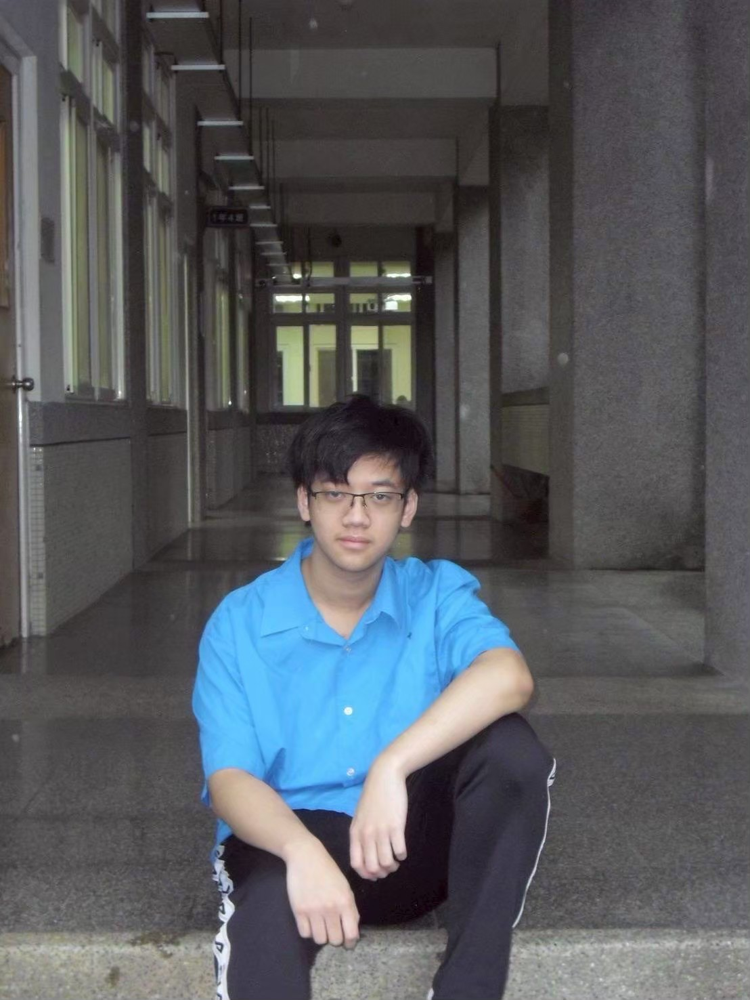
Major:Violin
bruch violin concerto no. 1 3rd movement
#隱藏學霸
上課不知道有沒有在聽但總是可以考很高分
#安靜
麒鈞很安靜，不常說話，但只要說話都很好笑
#似乎有點怕蟲
麒鈞因為昆蟲而偷偷奔跑的模樣讓同學們每次都笑得很快樂
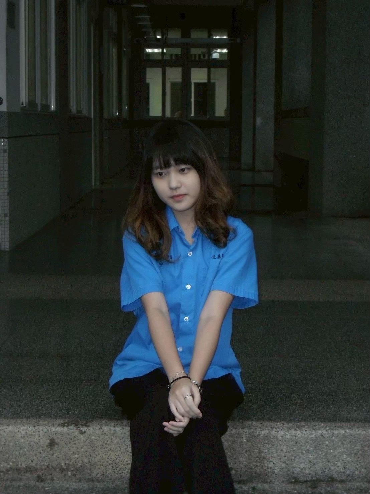
Major:Piano
Dmitry Kabalevsky:Piano Sonata No. 3 in F Major, Op.46
#皮包骨
明明瘦的跟皮包骨一樣整天在那邊：「我要減肥⋯我好胖⋯我變胖了」有沒有考慮去吃答辯
#綽號
很38 所以她有一個綽號叫38文
#一言難盡的廚藝
煮飯很難吃
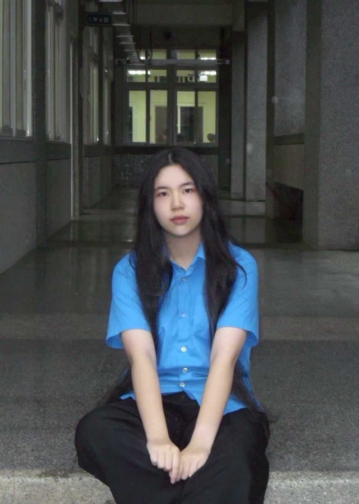
Major:Tuba
Jan Koctsier :Concertino opus 77 for Tuba and Piano Mov. I Allegro con brio
#風紀
因為穎宣的努力，每次秩序都可以拿不錯的名次
#低音號
喜歡吹低音號，喜歡自己的主修
#貓咪
曾經用紙折了很多貓咪，很可愛
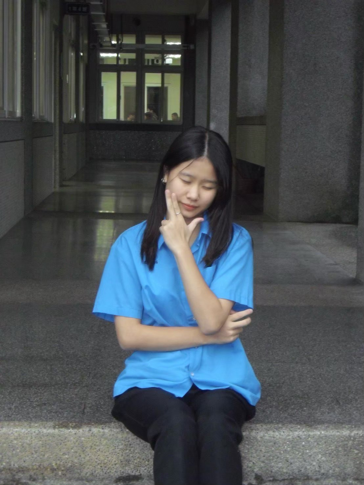
Major:piano
Cecile Chaminade:Arabesque No. 2, Op. 92
#分享
分享欲極強 跟他同個宿舍好幸福呀
#棒球狂迷
為了看棒球從花蓮殺到天母
#相機
喜歡拍照所以努力存錢買了一台相機
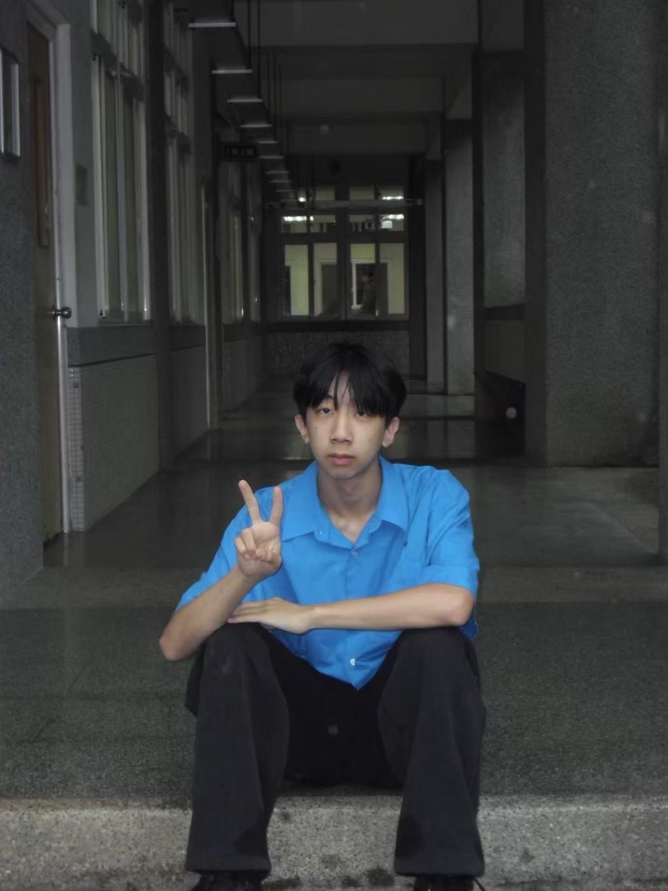
Major:piano
Liszt: Rigoletto Paraphrase
#月老
說要去求紅線，叫朋友陪他，結果自己沒求到
#挺暖的
在要衝去披薩店的時候還會幫你拿東西
#日本
竟然是混血根本看不出來
#鋼琴超強
國小還負責全校畢業歌彈奏超強！
#地獄
長紹經常講出一些驚人又好笑的評論
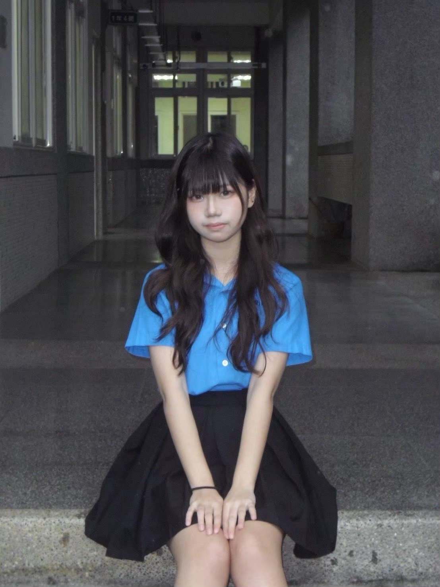
Major:Flute
Dutilleux Sonatine mov. IlI
#昏倒
因為每次睡覺都秒睡，還睡很久，所以大家都會說她昏倒。
#愛跌倒
跑步跌倒 走路跌倒 站著也跌倒 坐著也跌倒 睡覺也跌倒 反正怎麼樣都可以跌倒
#睡錯床
把朋友的床當他的床
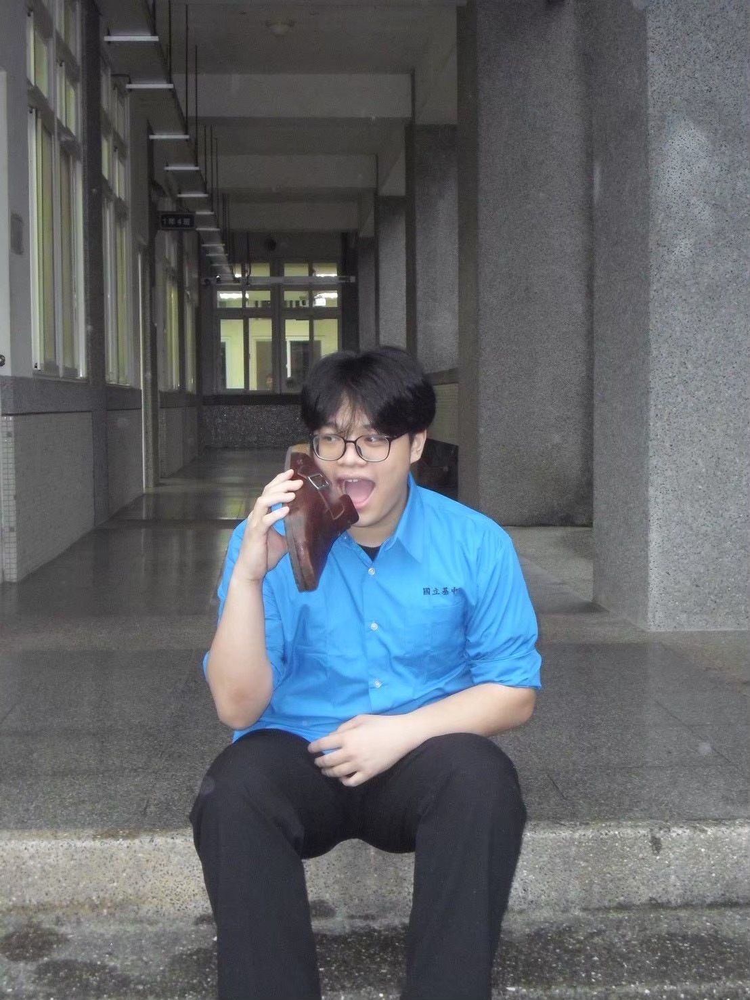
Major:Piano
Chopin Piano Sonata No.3 Op.58 Mov.1
#胖胖
：「欸！我是不是變瘦了」「我覺得我變瘦了欸」
#衝撞
不知道他從什麼時候開始學會衝撞同學
每次人家說他胖他就開始衝撞
很痛啊邱同學
#遲到不請假
不知道在堅持什麼耶 明明請假就可以遲到更多節 偏偏不請 硬要搞到自己差一點不能考試
#易熱體質
從車站走來學校就可以滿身大汗⋯？到哪裡都：「欸我好熱你會熱嗎」（拿出一大包濕紙巾擦汗）但真⋯真的沒那麼熱啦！！
#衣服
每次都有好多奇怪特別的衣服！
e.g 深紫色羊毛氈材質衣服（像茄子）
#活潑
很會學動物叫尤其是貓頭鷹、可以不在乎別人眼光的脫好鞋直接鑽進無印良品展示床的被窩裡面、可以讓別人的手機相簿充滿他的自拍跟影片當事人過很久才會發現
#全自動
什麼東西都可以給奕勛拿，就是不要讓奕勛幫忙拿手機，不然你的Instagram帳號會出現很多有趣的限時動態
#吃
奕勛身邊的朋友都會像隻護食的狗一樣，很怕自己的食物被奕勛吃光光
#Judy筋膜炎
和足底筋膜炎相伴了一陣子，奕勛的朋友們覺得這是一段很有趣的時光
#把火鍋吃得很炸裂
奕勛吃火鍋時桌面都會變的很炸裂，像嘴巴破洞一樣！
Major:Piano
Beethoven:sonata Op.27 No.1 mov:IV
#蒸汽火車
常常在天氣冷或是風很大的時候變蒸氣火車
#幸福女人
每次下課都有男朋友載他出去玩～啊不就好幸福
#抓地力
自稱自己原住民抓地力很強 但明明就常常跌倒
#感冒
感冒的時候聲音變得很可愛
Major:Vocal
1.Mozart:Giunse alfin il momento...Deh vieni non tardar
2.G.Donizetti:Quel guardo il cavaliere...
So anch‘io la virtu magica
#書包
書包永遠都裝滿書 大概10公斤以上 然後說很輕 放假回去還要再加個行李箱一樣是裝滿書 不愧是班排一
#經典名言
媽媽在給我錢的時候就是好媽媽
#吵
小時候很愛講話，搭公車坐在司機的附近，後來一直講話司機覺得她很吵就想要他下車
#斜槓人生
國小有去學才藝學肚皮舞
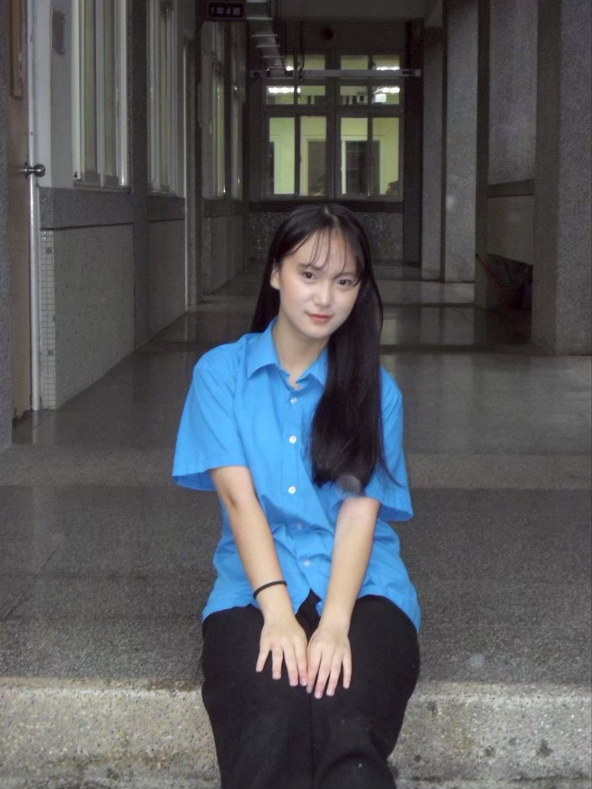
Major:Piano
Claude Debussy: Préludes, Livre II, No. 2: Ondine
#真的很吵
只能說跟他住一起蠻累的啦！
#鱈魚香絲
自己一個人把好市多那種一大包鱈魚香絲吃完
#綽號
有很多綽號，但大家都比較常叫他阮
#自律一姐
聽說郁涵時常有在宿舍努力讀書的想法，但總是會被鏡子中美麗的自己吸引住，導致她一直都在照鏡子
#善良
雖然郁涵有時候怪怪的但他人很好
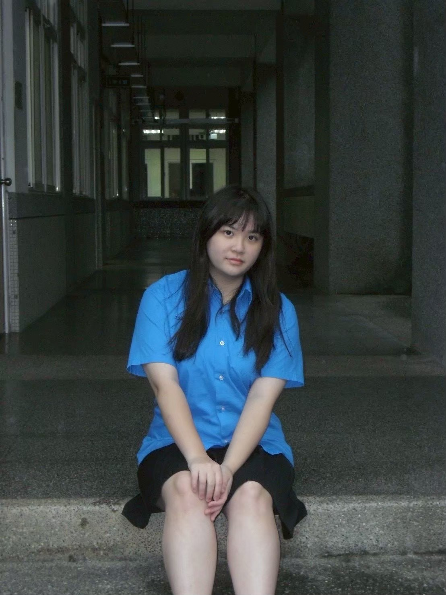
Major:Piano
Beethoven: Piano Sonata in d minor, Op.31-2, mov.I
#討厭香菇
他不喜歡吃香菇，幼稚園老師強迫他吃，最後全吐出來，然後他怕被罵，又把吐喝回去
#豎笛
因為豎笛他覺得很重，常常想要把豎笛搞不見
#哭
早上起床覺得睡不飽不想去學校在家哭給媽媽看，結果還是來學校了
#水瓶座
就是最奇怪的一個星座 但也是奇怪的很可愛
#走路
走路走很慢希望走路能快一點
#三魂六魄少一魄
被主修老師指出瀞文彈的巴哈，三魂六魄少一魄：少Tempo
#熱愛豎笛練習曲
有一陣子，瀞文的豎笛練習曲從第一首開始就沒有被敬愛的副修老師通過，因此慢慢累積，至少累積了5首以上，最後在朋友來幫忙算拍子的情況下，終於通過了！由此可見瀞文對於豎笛練習曲的熱愛。不過瀞文表示，目前已經不會有任何關於練習曲的煩惱了，因為整本練習曲都被自己用不見了，連練都沒辦法練，很好奇瀞文是如何用丟的呢！
#理想型
瀞文希望以後可以找到185電競男
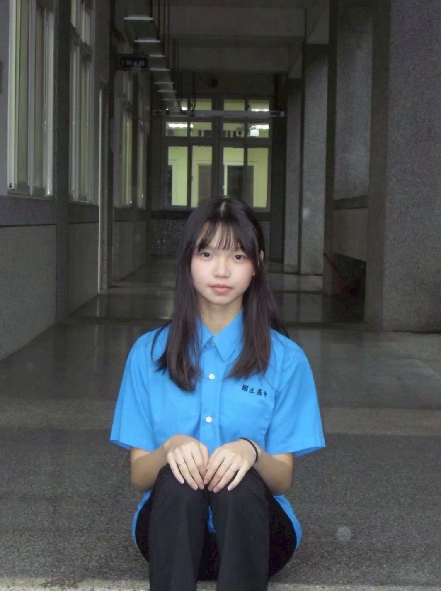
Major:Percussion
Wind Sketch
#蠢
除了睡覺以外 一直都很蠢
#瘦
瘦得要死沒有40公斤是怎樣可以吃多一點嗎
#喜歡小動物
很會學動物叫 尤其是狗 還有喜歡很多很嚇人的東西蟑螂、螞蟻、蜥蜴、水滴魚、壁虎、蝸牛，他都很喜歡 還會抓來養超奇怪 所以為了防止他亂抓東西到哪都帶著他
#草泥馬
吃東西的時候很像在吃草 跟草泥馬很像
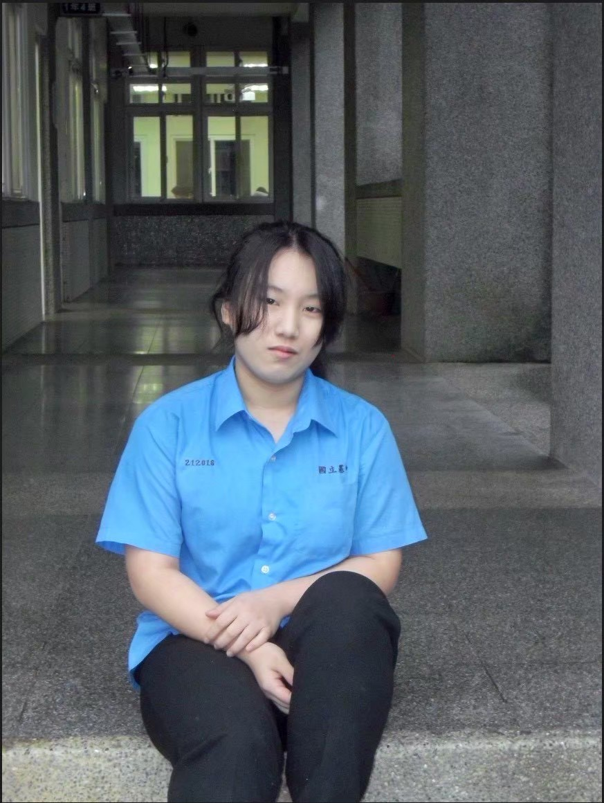
Major:Vinlin
chaikovsky: Violin Concerto in D major, Op. 35,1st mvt. Allegro moderato
#貼心
雅妍真的很貼心而且還很細節 跟他當朋友做什麼事都很放心
#很會安慰人
每次被他安慰都會覺得很溫暖
#卷
每次考完術科考雅妍都會說：「欸⋯我這次又爆了啦 怎麼辦⋯」結果都考得很前面呢
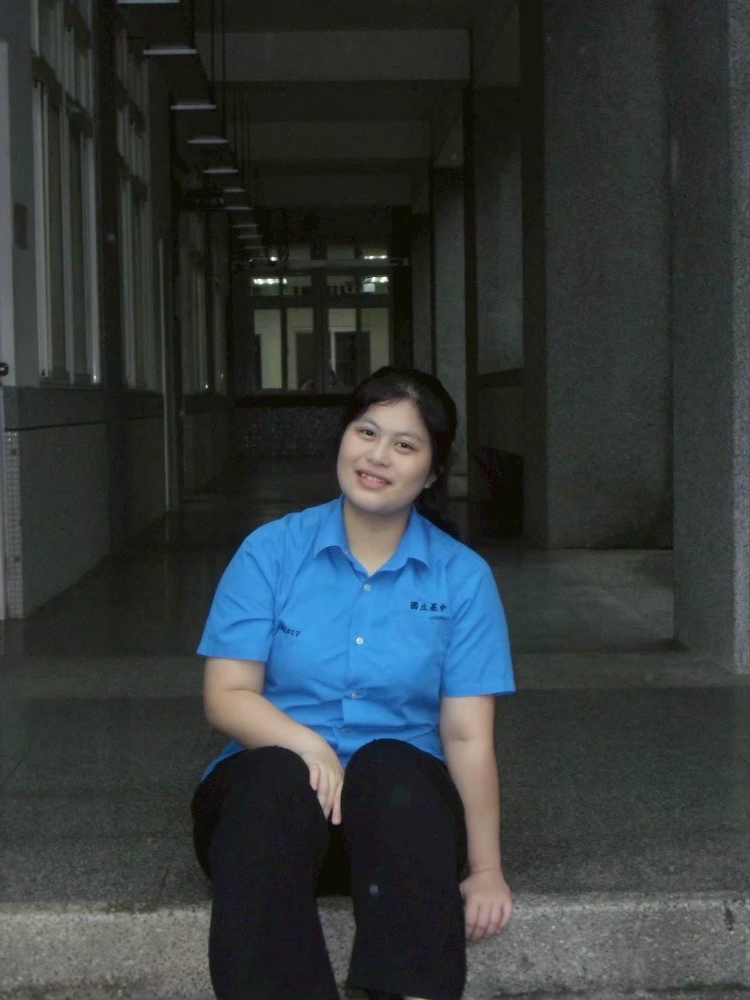
Major:Horn
B. M. COLOMER.: Fantaisie Legende
#按摩
是一個很會按摩的人
#什麼都會
全能小天才
#環境雲
對就是名字諧音 我取的 不覺得很好聽嗎
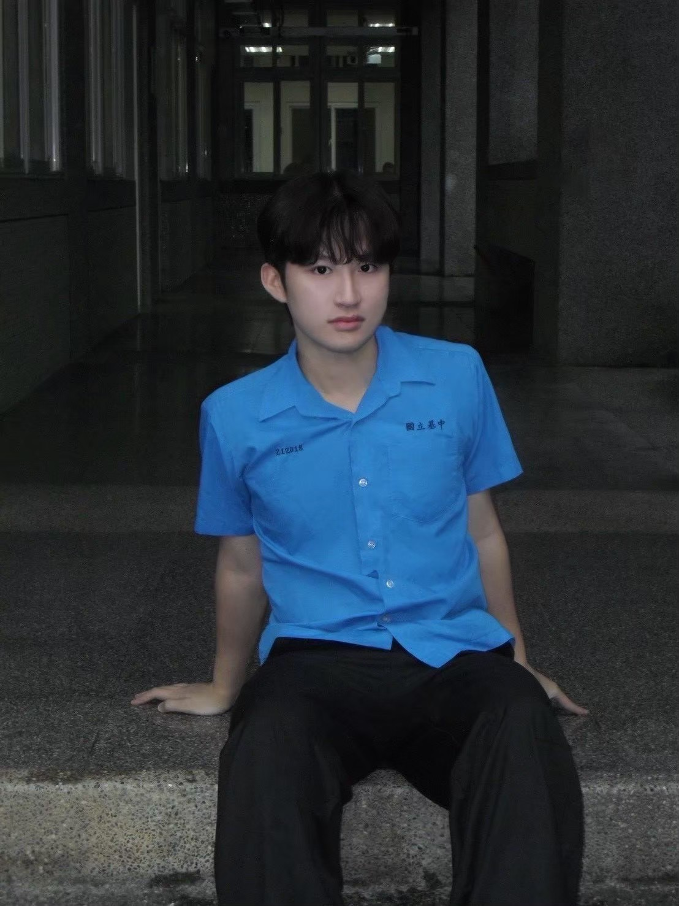
Major:Horn
Légende by Robert Planel Luke Baker
#草莓
曾經在上國文課的時候說家裡有種草莓，真羨慕有吃不完的草莓
#法國號
總是很認真的想精進自己的法國號
#睡覺
上課常常在打瞌睡
#帥
帥氣是無需多言的。
#跳繩專家
鈞宇不會跳跳繩但還是在體育課考試的很努力跳
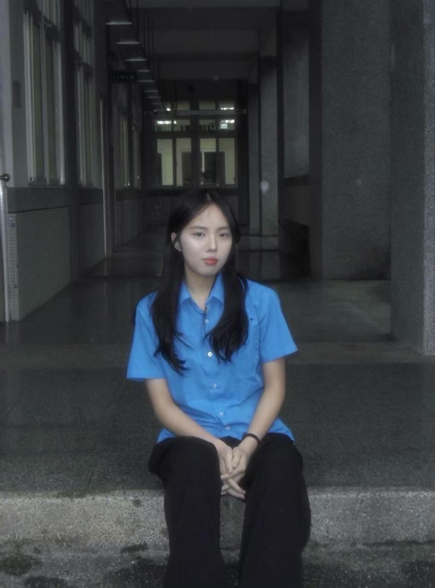
Major:Cello
E.Elgar: Cello Concerto in E minor, Op.85, mvt.IV
#兩餐金針菇怪人
每次去兩餐都把金針菇當麵吃
#什麼都可以笑
真的什麼都可以笑 走在路上看到什麼都要笑一下 還會笑到停不下來 重點是笑點都很奇怪。
#奶龍
喜歡大喊我才是奶龍
#笑聲傳遍整個音樂館
宇容每次大笑的音量都不容小覷，甚至音樂館的走廊上都會有回音傳回來。但最近宇容有意識到自己的這個特色，她怕會因為這樣交不到男朋友，所以想要改掉這個習慣，其實根本沒必要，請各位朋友去勸勸她好嗎？
#難道是什麼reels達人嗎
宇容每天都會根據每位朋友們不同的喜好，分享reels給大家，常常一睡醒就會收到宇容半夜傳的一大堆幹片
#夢境大師
宇容時常夢到一些讓自己感到幸福的夢，也會夢到奇葩的夢，如果去看她的Google搜索紀錄的話有機會看到：夢到蛇是什麼意思
#兔子
宇容常自嘲、被嘲笑長得像兔子，甚至開始從她口中聽到：你不覺得他也長得很像兔子嗎？
#殭屍
似乎對殭屍有極大的興趣，甚至在音樂館找好了可以躲殭屍的地點，好奇的人可以去問她
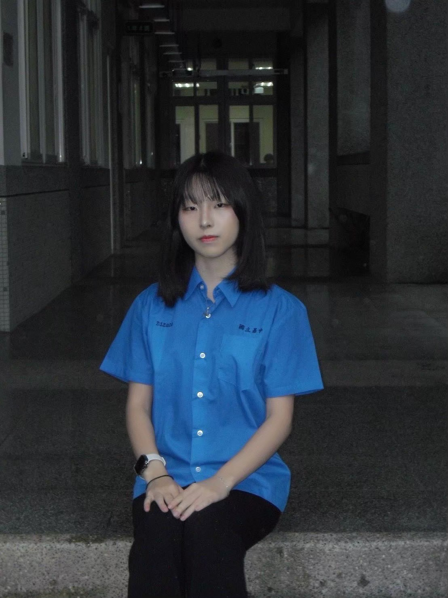
Major:Flute
R.Muczynski: Sonata for Flute and Piano, mvt.IV
#責任
他是一個很有責任感的人
#吉伊卡哇
吉伊媽媽：買到大概可以當作者的媽媽了吧
#芋頭
火鍋加芋頭的邪教教主
會把芋頭加在火鍋裡的外星人
#吃飯
吃飯吃到睡著
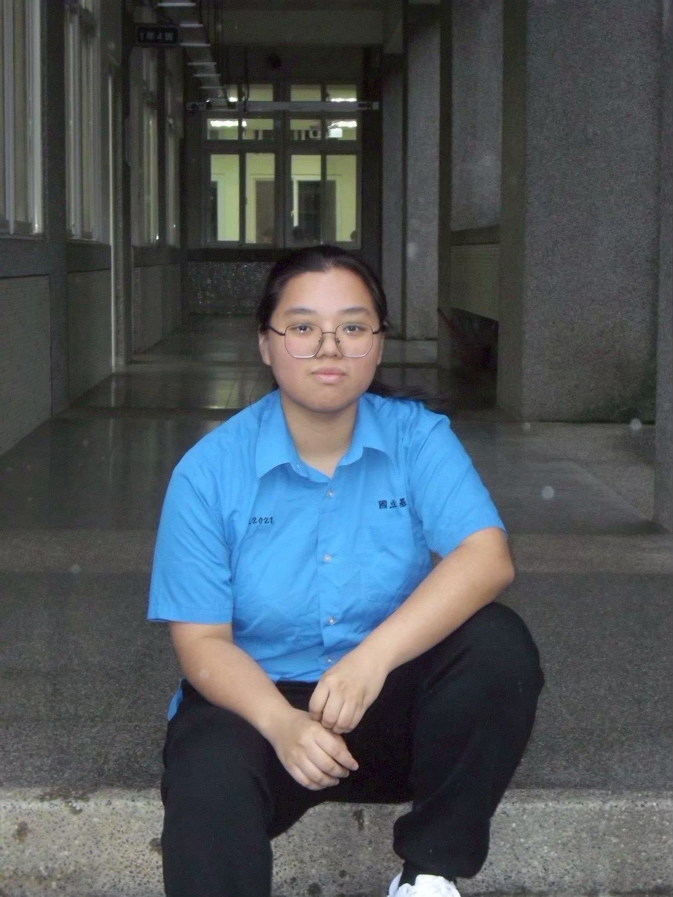
Major:Double Bass
Nino Rotas Divertimento concerto finale for Double Bass
#怕燙
因為怕燙火鍋都是在別人吃到一半的時候才開始吃
#大拐
比完全國賽後，放風去公園玩盪鞦韆結果扭到腳
#很可愛
有時上課時都會看到宇芯一臉茫然地聽著老師說話，也沒有在滑手機，但也不確定她是不是真的有在上課
#拍子
宇芯在同學積極的拜託下，在每次上課前幫同學算拍子，讓同學擺脫練習曲之苦。
E.Elgar: Cello Concerto in E minor, Op.85, mvt.IV
艾爾加最後一首重要作品《大提琴協奏曲》就像是位老人在沉鬱地思考人生。
第四樂章，大提琴以快速的漸強展開，完美展現出艾爾加在創作歷程中所體會到的沉鬱與痛苦，最後在深沉動人的感懷情緒中結束全曲。
Claude Debussy: Préludes, Livre II, No. 2: Ondine
德布西鋼琴作品成熟期的創作之一，第八首水妖 巧妙組合了各種不同型態的音階，並將這些組成音交織成非傳統概念的和弦，折射產生獨特的音響。
Jan Koctsier :Concertino opus 77 for Tuba and Piano Mov. I Allegro con brio
作曲家以新古典主義風格創作出這部低音號重要作品，成功將低音號提升為一個靈活且富有表現力的獨奏樂器。全曲結構清晰、風格明快，兼具戲劇性與幽默感。
chaikovsky: Violin Concerto in D major, Op. 35,1st mvt. Allegro moderato
柴可夫斯基《D大調小提琴協奏曲》第一樂章旋律優美而充滿熱情，小提琴以抒情的主題開始，中段展開華麗的技巧段落，整體情感豐富，最後以明亮有力的結尾收束，全曲氣勢宏大
Légende by Robert Planel Luke Baker
德布西鋼琴作品成熟期的創作之一，第八首水妖
巧妙組合了各種不同型態的音階，並將這些組成音交織成非傳統概念的和弦，折射產生獨特的音響。法國作曲家羅貝．普拉內爾創作，曲中融合柔美旋律與豐富和聲，情感由平靜轉為激昂，再回歸寧靜，如同一段動人傳說。演奏時著重音色層次與情感表達，展現法國號的歌唱魅力。
Edouard Lalo: Cello Concerto in D minor, 3rd mvt. Andante-Allegro Vivace
拉羅 為十九世紀浪漫樂派的法國作曲家。《d小調大提琴協奏曲》充分展現了西班牙風格，綻放出濃厚的異國色彩，清晰明快、具龐大氣勢與魄力。
R.Muczynski: Sonata for Flute and Piano, mvt.IV
這首曲子共有四個樂章，在最後的快板樂章，極富節奏性的狂野美。其中別於傳統的輕重音與大量切分音的使用，使之聽起來生氣蓬勃，裝飾奏更顯演奏者的技巧，是一氣呵成的絢麗樂章。
Dmitry Kabalevsky:Piano Sonata No. 3 in F Major, Op.46
卡巴烈夫斯基奏鳴曲講求節奏性，使用緊湊的附點音符及快速音群，旋律明朗。
作品展現了俄羅斯音樂的傳統。
bruch violin concerto no. 1 3rd movement
布魯赫第一號小提琴協奏曲第三樂章節奏活躍、旋律明亮，結合浪漫與力量感。
小提琴展現高超技巧與熱情對比，情緒由激昂轉向輝煌，形成華麗的終章。
Cecile Chaminade:Arabesque No. 2, Op. 92
這首曲子旋律線如絲帶般纏繞，情感不深沉卻溫柔動人。帶著一種法國式的優雅與細膩，既有少女的輕盈，也有成熟女性的柔和端莊。
1.Mozart:Giunse alfin il momento...Deh vieni non tardar
2.G.Donizetti:Quel guardo il cavaliere...
So anch‘io la virtu magica
1.第一首選自莫札特歌劇《費加洛的婚禮》第四幕，
表面是溫柔的愛之召喚，實則是一場機智的戲中戲。蘇珊娜假裝成伯爵夫人等待，卻也巧妙戲弄偷聽的費加洛。甜美旋律間藏著策略與真情，展現莫札特筆下女性的聰慧與優雅。
2.第二首選自董尼才第歌劇《帕斯夸雷先生》的第一幕，是諾琳娜登場時的詠嘆調——她一邊閱讀浪漫小說，一邊對著鏡子唱出這段機智又迷人的獨白。輕快明亮的旋律中，藏著女性對情感主導的自覺與對愛情遊戲的優雅掌握。
Nino Rotas Divertimento concerto finale for Double Bass
尼諾·羅塔的低音提琴協奏曲第四樂章，是一首充滿活力且富有戲劇性的作品，展現了羅塔獨特的音樂風格。該樂章通常節奏快速，充滿能量，同時也兼具旋律性和張力。。
Beethoven:sonata Op.27 No.1 mov:IV
第四樂章以熱情奔放的速度展開，展現強烈的內在衝突。激烈的節奏與鮮明的對比象徵情感的掙扎，在推進中不斷聚焦，最終在華麗結尾中釋放能量，展現貝多芬堅定的意志與不屈的精神。
Wind Sketch
「風紋」指的是風吹過沙地、水面、或草原時留下的流動紋理。
安倍以此作為靈感，藉由音樂去描繪「風的形狀」
這首曲子聽起來既有東方的禪意，又有自然詩的自由感。
Beethoven: Piano Sonata in d minor, Op.31-2, mov.I
貝多芬《第十七號鋼琴奏鳴曲〈暴風雨〉》第一樂章以陰鬱神秘的緩板開場，宛如風暴前的寂靜，隨後進入激烈的快板，展現內心的掙扎與不安。象徵心靈深處永不停歇的風暴。
B. M. COLOMER.: Fantaisie Legende
此曲為幻想傳奇，作曲家以不同的色彩、同樣的節奏反覆的堆疊。最後以俐落的姿態做出結尾。
Chopin Piano Sonata No.3 Op.58 Mov.1
此曲創作於1844年，蕭邦與愛人 喬治．桑感情漸遠之時。開頭壯闊的琶音與和弦就如同命運的宣言，激昂的主題與抒情的副題交錯，就好像蕭邦內在的矛盾與柔光 此曲最終在B大調中昇華。
Dutilleux Sonatine mov. IlI
亨利·杜悌尤為20世紀最出色的法國作曲家之一，以《長笛小奏鳴曲》為代表作。亨利•杜悌尤在樂曲中運用許多連續平行音程、不和諧音程及轉調模糊等寫作手法，將調性與無調性融合於其中。
Liszt: Rigoletto Paraphrase
這首作品以華麗的風格展現李斯特驚人的創作力而聞名,他將歌劇的主題以更具炫技性的鋼琴呈現,是李斯特眾多歌劇改編曲中的一個例子